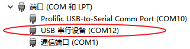
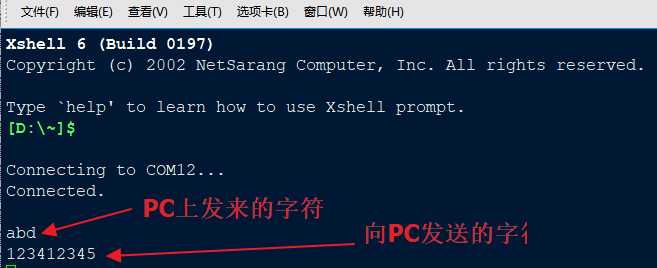

7.12.1. 配置指南¶
ArtinChip 提供了 2 路 USB Host 端口 和 1 路 USB Device 端口，需要分别进行配置。
7.12.1.1. USB Host 配置¶
7.12.1.1.1. USB Host Controller 配置¶
首先需要配置好 USB Host Contoller ，ArtinChip 在 1 个 USB Host 端口中提供了 2 类 Host Contoller：
针对 USB 2.0 (High Speed) 的 EHCI 控制器
针对 USB 1.0/1.1 (Low/Full Speed) 的 OHCI 控制器
在软件上需要需要分开配置。
7.12.1.1.1.1. EHCI 配置¶
Linux Kernel Kconfig 文件中使能相应 EHCI Driver：
> Device Drivers > USB support
<*> EHCI HCD (USB 2.0) support
[*] Root Hub Transaction Translators
[*] Improved Transaction Translator scheduling
<*> Support for Artinchip on-chip EHCI USB controller
注解
内核配置主要是通过 make menuconfig 命令进行kernel的功能选择，配置完成后的项目存储在 target/configs/xxx_defconfig 文件中。
DTS 文件中配置相应 EHCI Device:
usbh0: usb@10210000 {
compatible = "artinchip,aic-usbh-v1.0";
reg = <0x0 0x10210000 0x0 0x100>;
interrupts-extended = <&plic0 35 IRQ_TYPE_LEVEL_HIGH>, <&plic0 4 IRQ_TYPE_LEVEL_HIGH>;
clocks = <&cmu CLK_USBH0>;
clock-names = "usbh";
resets = <&rst RESET_USBH0>;
reset-names = "usbh";
dr_mode = "host";
};
usbh1: usb@10220000 {
compatible = "artinchip,aic-usbh-v1.0";
reg = <0x0 0x10220000 0x0 0x100>;
interrupts-extended = <&plic0 37 IRQ_TYPE_LEVEL_HIGH>,
<&plic0 38 IRQ_TYPE_LEVEL_HIGH>;
clocks = <&cmu CLK_USBH1>;
clock-names = "usbh";
resets = <&rst RESET_USBH1>, <&rst RESET_USBPHY1>;
reset-names = "usbh", "usbh-phy";
dr_mode = "host";
};
注解
这些参数主要在文件 target/d211/common/d211.dtsi 中，模块系统参数随 IC 的设定而定，一般不能进行更改，除非更换了新的 IC，则需要在专业人士的指导下进行更改。
7.12.1.1.1.2. OHCI 配置¶
Linux Kernel Kconfig 文件中使能相应 EHCI Driver：
> Device Drivers > USB support
<*> OHCI HCD (USB 1.1) support
<*> Support for Artinchip on-chip OHCI USB controller
DTS 文件中配置相应 EHCI Device:
ohci0: usb@10210400 {
compatible = "artinchip,aic-ohci-v1.0";
reg = <0x10210400 0x100>;
interrupts = <&plic0 4 IRQ_TYPE_LEVEL_HIGH>;
num-ports = <1>;
};
ohci1: usb@10220400 {
compatible = "artinchip,aic-ohci-v1.0";
reg = <0x10220400 0x100>;
interrupts = <&plic0 6 IRQ_TYPE_LEVEL_HIGH>;
};
7.12.1.1.2. USB Interface 驱动配置¶
在配置好 USB Host Controller 以后，就能够正确识别插入 USB 总线的 Device 设备了。
但是 USB Device 有很多不同类型 (例如：U 盘、键盘鼠标、无线网卡 …) ，这些功能都是在 USB Device 中以 Interface 为单位提供的。所以要使用 USB Device 的具体功能，还需要配置不同类型 USB Interface 的驱动。
7.12.1.1.2.1. U 盘 配置¶
U 盘是 USB 2.0 设备，所以首先得配置好上节中的 EHCI，再进行下面的配置。
在 Linux Kernel Kconfig 中使能对 USB Mass Storage 类型的 USB Interface 驱动的支持。
> Device Drivers > USB support
<*> USB Mass Storage support
还需要使能其他相关配置：
块设备：
> Device Drivers
[*] Block devices --->
SCSI 设备：
> Device Drivers > SCSI device support
<*> SCSI device support
[*] legacy /proc/scsi/ support
*** SCSI support type (disk, tape, CD-ROM) ***
<*> SCSI disk support
文件系统：
> File systems > DOS/FAT/EXFAT/NT Filesystems
<*> VFAT (Windows-95) fs support
插入 U 盘，通过
mount命令将 U 盘挂载到合适的目录下就可以操作了：
[aic@] #
[ 1591.469696] usb 1-1: new high-speed USB device number 3 using aic-ehci
[ 1591.674435] usb-storage 1-1:1.0: USB Mass Storage device detected
[ 1591.682567] scsi host0: usb-storage 1-1:1.0
[ 1592.692021] scsi 0:0:0:0: Direct-Access SanDisk Cruzer Blade 1.00 PQ: 0 ANSI: 6
[ 1592.714329] sd 0:0:0:0: [sda] 30842880 512-byte logical blocks: (15.8 GB/14.7 GiB)
[ 1592.724171] sd 0:0:0:0: [sda] Write Protect is off
[ 1592.730166] sd 0:0:0:0: [sda] Write cache: disabled, read cache: enabled, doesn't support DPO or FUA
[ 1592.751720] sda: sda1
[ 1592.768330] sd 0:0:0:0: [sda] Attached SCSI removable disk
[aic@] # mount -t vfat /dev/sda1 /mnt/u
[aic@] # ls /mnt/u
System Volume Information u-boot-spl-dtb.bin
u-boot-dtb.bin vmlinux
u-boot-dtb.img zImage
u-boot-spl-dtb.aic
[aic@] #
7.12.1.1.2.2. USB 键盘/鼠标 配置¶
U 盘是 USB 1.0/1.1 设备，所以首先得配置好上节中的 OHCI，再进行下面的配置。
在 Linux Kernel Kconfig 中使能对 USB HID 类型的 USB Interface 驱动的支持。
> Device Drivers > HID support > USB HID support
<*> USB HID transport layer
插入键盘鼠标，可以通过
/dev/input/event文件读取到键盘鼠标上报的数据：
[aic@] #
[ 14.210983] usb 2-1: new low-speed USB device number 2 using aic-ohci
[ 14.478006] random: fast init done
[ 14.497013] input: PixArt Dell MS116 USB Optical Mouse as /devices/platform/soc/10220400.usb/usb2/2-1/2-1:1.0/0003:413C:301A.0001/input/input2
[ 14.510871] hid-generic 0003:413C:301A.0001: input: USB HID v1.11 Mouse [PixArt Dell MS116 USB Optical Mouse] on usb-10220400.usb-1/input0
[aic@] # hexdump /dev/input/event2
0000000 e138 5e0b 4c30 0004 0004 0004 0001 0009
0000010 e138 5e0b 4c30 0004 0001 0110 0001 0000
0000020 e138 5e0b 4c30 0004 0000 0000 0000 0000
0000030 e138 5e0b d657 0007 0004 0004 0001 0009
0000040 e138 5e0b d657 0007 0001 0110 0000 0000
0000050 e138 5e0b d657 0007 0000 0000 0000 0000
0000060 e139 5e0b 9085 0003 0004 0004 0001 0009
0000070 e139 5e0b 9085 0003 0001 0110 0001 0000
0000080 e139 5e0b 9085 0003 0000 0000 0000 0000
0000090 e139 5e0b a3bc 0005 0004 0004 0001 0009
00000a0 e139 5e0b a3bc 0005 0001 0110 0000 0000
00000b0 e139 5e0b a3bc 0005 0000 0000 0000 0000
7.12.1.2. USB Device 配置¶
首先要配置好 USB Device Controller。
7.12.1.2.1. USB Device Controller 配置¶
Linux Kernel Kconfig 文件中使能相应 UDC Driver：
> Device Drivers > USB support > USB Gadget Support > USB Peripheral Controller
<*> ArtinChip USB2.0 Device Controller
DTS 文件中配置相应 UDC Device:
aicudc: udc@10200000 {
compatible = "artinchip,aic-udc-v1.0";
reg = <0x0 0x10200000 0x0 0x1000>;
interrupts-extended = <&plic0 34 IRQ_TYPE_LEVEL_HIGH>;
clocks = <&cmu CLK_USBD>, <&cmu CLK_USB_PHY0>;
clock-names = "udc_clk";
resets = <&rst RESET_USBD>, <&rst RESET_USBPHY0>;
reset-names = "aicudc", "aicudc-ecc";
status = "okay";
};
7.12.1.2.2. USB Gadget 配置¶
为了方便 Linux 系统模拟成各种类型的 USB Device，Linux 设计了一个 Gadget Device 。为了方便用户使用 ，Linux 又将 ConfigFS 引入 USB Device 子系统，用来灵活配置 Gadget Device。
所以在使用 USB Device 时，在 Linux Kernel 中把这两者都配置成使能。
7.12.1.2.2.1. Gadget 配置¶
> Device Drivers > USB support
<*> USB Gadget Support --->
7.12.1.2.2.2. ConfigFS 配置¶
> Device Drivers > USB support > USB Gadget Support
<*> USB Gadget functions configurable through configfs
7.12.1.2.3. USB Interface 配置¶
在 Gadget Device 基础之上，需要配置具体的 Interface / Function 才能提供具体的 USB Device 功能。
USB Gadget Device 可以模拟成各种功能的 USB 外设，例如：USB 串口、USB 网口、U 盘。。。
7.12.1.2.3.1. ACM 串口 配置¶
Linux Kernel Kconfig 文件中使能
CDC ACM类型的Gadget functions：
> Device Drivers > USB support > USB Gadget Support
<*> USB Gadget functions configurable through configfs
[*] Abstract Control Model (CDC ACM)
> Device Drivers
[*] Block devices --->
通过用户态的 configfs 文件接口创建包含
ACM串口功能的 USB Device：
mount -t configfs none /sys/kernel/config
cd /sys/kernel/config/usb_gadget
mkdir g1
cd g1
echo "0x1d6b" > idVendor
echo "0x0104" > idProduct
mkdir strings/0x409
ls strings/0x409/
echo "0123456789" > strings/0x409/serialnumber
echo "AIC Inc." > strings/0x409/manufacturer
echo "Bar Gadget" > strings/0x409/product
mkdir functions/acm.GS0
mkdir configs/c.1
ls configs/c.1
mkdir configs/c.1/strings/0x409
ls configs/c.1/strings/0x409/
echo "ACM" > configs/c.1/strings/0x409/configuration
ln -s functions/acm.GS0 configs/c.1
echo `ls /sys/class/udc` > UDC
用户使用：
将单板的 USB Device 端口和 Windows PC 的 USB Host 端口连接，在 Windows PC 设备管理器会看到一个新的USB串口节点：

在 PC 端使用串口终端工具打开 COM12，波特率使用 115200。
在单板端执行：
echo abd > /dev/ttyGS0，在 PC 端串口就会收到该字符串：
在单板端执行
cat /dev/ttyGS0，在 PC 端写一个字符串 “123412345” ，点回车后，在单板端也能收到该字符串。
7.12.1.2.3.2. U 盘 配置¶
Linux Kernel Kconfig 文件中 ：
使能 Mass storage 类型的 Gadget functions ：:
> Device Drivers > USB support > USB Gadget Support
<*> USB Gadget functions configurable through configfs
[*] Mass storage
使能环回块设备：
> Device Drivers
<*> Loopback device support
Busybox 中使能
losetup命令：
> Linux System Utilities
[*] losetup (5.5 kb)
通过用户态的 configfs 文件接口创建包含
Mass storage存储功能的 USB Device：
dd if=/dev/zero of=/tmp/mass.img bs=128K count=132
losetup /dev/loop0 /tmp/mass.img
mkdir /tmp/media
mkfs.vfat /dev/loop0
mount -t vfat /dev/loop0 /tmp/media/
cp /linuxrc /tmp/media
sync
mount -t configfs none /sys/kernel/config
cd /sys/kernel/config/usb_gadget
mkdir g_mass
cd g_mass
echo "0x200" > bcdUSB
echo "0x100" > bcdDevice
echo "0x1234" > idVendor
echo "0x5678" > idProduct
mkdir configs/c1.1
mkdir functions/mass_storage.0
echo /dev/loop0 > functions/mass_storage.0/lun.0/file
mkdir strings/0x409
echo "0123456789ABCDEF" > strings/0x409/serialnumber
echo "river" > strings/0x409/manufacturer
echo "river_msc" > strings/0x409/product
mkdir configs/c1.1/strings/0x409
echo "abc" > configs/c1.1/strings/0x409/configuration
ln -s functions/mass_storage.0 configs/c1.1
echo `ls /sys/class/udc` > UDC
用户使用：
将单板的 USB Device 端口和 Windows PC 的 USB Host 端口连接，在 Windows PC 上会看到一个新增的 U 盘，可以正常读写。
7.12.1.2.3.3. NCM 网口 配置¶
Linux Kernel Kconfig 文件中 ：
使能 CDC NCM 类型的 Gadget functions ：:
> Device Drivers > USB support > USB Gadget Support
<*> USB Gadget functions configurable through configfs
[*] Network Control Model (CDC NCM)
使能 TCP/IP 支持：
> Networking support > Networking options
[*] TCP/IP networking
通过用户态的 configfs 文件接口创建包含
CDC NCM以太网功能的 USB Device：
mount -t configfs none /sys/kernel/config
cd /sys/kernel/config/usb_gadget
mkdir g_ncm
cd g_ncm
echo "0xA55A" > idVendor
echo "0x0111" > idProduct
mkdir strings/0x409
echo "0123456789" > strings/0x409/serialnumber
echo "Xyz Inc." > strings/0x409/manufacturer
echo "NCM gadget" > strings/0x409/product
mkdir functions/ncm.usb0
mkdir configs/c.1
mkdir configs/c.1/strings/0x409
echo "NCM" > configs/c.1/strings/0x409/configuration
ln -s functions/ncm.usb0 configs/c.1
echo `ls /sys/class/udc` > UDC
ifconfig usb0 up
ifconfig usb0 173.11.1.1
用户使用：
将单板的 USB Device 端口和 Ubuntu PC 的 USB Host 端口连接，在 Ubuntu PC 会看到一个新的网络接口，名字随机，类似：
enx0afcc15d3417。配置 Ubuntu PC 端的网口为同一网段地址，
sudo ifconfig enx0afcc15d3417 173.11.1.2。两个网口相互可以 ping 通：
ubuntu@ubuntu $ ping 173.11.1.1 PING 173.11.1.1 (173.11.1.1) 56(84) bytes of data. 64 bytes from 173.11.1.1: icmp_seq=1 ttl=64 time=10.3 ms 64 bytes from 173.11.1.1: icmp_seq=2 ttl=64 time=5.02 ms
7.12.1.2.3.4. ECM 网口 配置¶
Linux Kernel Kconfig 文件中 ：
使能 CDC ECM 类型的 Gadget functions ：:
> Device Drivers > USB support > USB Gadget Support
<*> USB Gadget functions configurable through configfs
[*] Ethernet Control Model (CDC ECM)
使能 TCP/IP 支持：
> Networking support > Networking options
[*] TCP/IP networking
通过用户态的 configfs 文件接口创建包含
CDC ECM以太网功能的 USB Device：
mount -t configfs none /sys/kernel/config
cd /sys/kernel/config/usb_gadget
mkdir g_ecm
cd g_ecm
echo "0x1d6b" > idVendor
echo "0x0104" > idProduct
mkdir strings/0x409
echo "0123456789" > strings/0x409/serialnumber
echo "AIC Inc." > strings/0x409/manufacturer
echo "Bar Gadget" > strings/0x409/product
mkdir functions/ecm.usb0
mkdir configs/c.1
mkdir configs/c.1/strings/0x409
echo "ECM" > configs/c.1/strings/0x409/configuration
ln -s functions/ecm.usb0 configs/c.1
echo `ls /sys/class/udc` > UDC
ifconfig usb0 up
ifconfig usb0 173.11.1.1
用户使用：和上一节 NCM 网口 一样。
7.12.1.2.3.5. ADBD 配置¶
Linux Kernel Kconfig 文件中 ：
使能 FunctionFS 类型的 Gadget functions ：:
> Device Drivers > USB support > USB Gadget Support
<*> USB Gadget functions configurable through configfs
[*] Function filesystem (FunctionFS)
使能 TCP/IP 支持：
> Networking support > Networking options
[*] TCP/IP networking
通过用户态的 configfs 文件接口创建
FunctionFS中的 USB Device，挂载完 FunctionFS 文件系统以后，adbd通过/dev/usb-ffs/adb中映射成文件的 endpoint 直接和 USB Host 进行通讯：
mkdir /dev/pts
mount -t devpts none /dev/pts
mount -t configfs none /sys/kernel/config
cd /sys/kernel/config/usb_gadget
mkdir g_adb
cd g_adb
echo "0x18d1" > idVendor
echo "0x4e26" > idProduct
mkdir configs/c.1
mkdir functions/ffs.adb
mkdir strings/0x409
mkdir configs/c.1/strings/0x409
echo "0123456789ABCDEF" > strings/0x409/serialnumber
echo "AIC Inc." > strings/0x409/manufacturer
echo "FunctionFS gadget (adb)" > strings/0x409/product
echo "Conf 1" > configs/c.1/strings/0x409/configuration
echo 120 > configs/c.1/MaxPower
ln -s functions/ffs.adb configs/c.1
mkdir -p /dev/usb-ffs/adb
mount -o uid=2000,gid=2000 -t functionfs adb /dev/usb-ffs/adb
ifconfig lo up
ifconfig
cd /root
adbd&
sleep 1
echo `ls /sys/class/udc/` > /sys/kernel/config/usb_gadget/g_adb/UDC
用户使用：
将单板的 USB Device 端口和 PC 的 USB Host 端口连接，在 PC 端运行
adb shell命令即可进行 adb 操作。
7.12.1.3. USB OTG 配置¶
USB Host 0 和 USB Device 共享 1 路 phy。要么同时只能启用其中一种功能，要么启用 USB OTG 功能通过 id 管脚的值来动态切换对外功能。
Linux Kernel Kconfig 文件中使能相应 OTG Driver：
> Device Drivers > USB support
<*> EHCI HCD (USB 2.0) support
[*] Root Hub Transaction Translators
[*] Improved Transaction Translator scheduling
<*> Support for Artinchip on-chip EHCI USB controller
<*> Support for Artinchip on-chip OTG Switch
DTS 文件中配置相应 OTG Device:
otg: usb-otg {
compatible = "artinchip,aic-otg-v1.0";
};
&otg {
pinctrl-names = "default";
pinctrl-0 = <&otg_pins_a>;
id-gpios = <&gpio_d 1 GPIO_ACTIVE_HIGH>;
vbus-en-gpios = <&gpio_d 0 GPIO_ACTIVE_HIGH>;
};